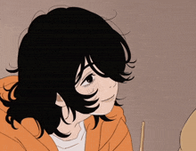
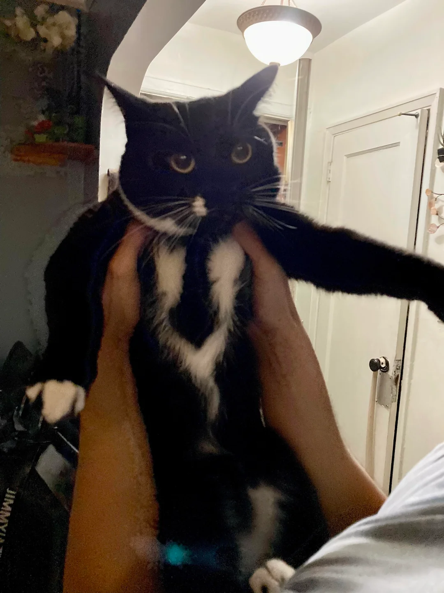

"The minute you choose to play it safe, you lose the opportunity to create something truly spectacular."
Hello! My name is Linda Paegle, I'm 22 years old and I'm from Latvia.
I enjoy being around people, whether that's for a project or just for fun. My best work happens when there's a clear sense of direction, either from me or from the people I'm working with. My biggest strength is my need for knowledge: outside of my studies, I spend my time learning about biology, paleontology, astronomy and new technologies.
I also come from an art background, which is more or less the opposite of what I'm doing now. Art taught me a great deal about patience, and patience turns out to matter just as much in ICT. Making this switch felt like a big risk, but the more I learn, the more I notice how much the two have in common. Being able to see those similarities is what makes me genuinely enjoy the work and want to keep going with it.
A few other things about me: I'm almost always at home and fairly socially awkward, but once I know someone well, we will definitely end up on side quests together. I'm also a big fan of horror movies and survival games.

Some of my favorite musicians are: "The Front Bottoms" "Mars Argo" "Radiohead" "The Beatles" "Sorority Noise" "Korn" "Slipknot" "Lamp"
My favorite games include: "Omori" "Skyrim" "Doom" "No Mans Sky" "Gnosia"
My favorite shows/movies are : "Alice in Borderland" "Project Hail Mary" "Iron Lung" "Severance" "Steins;Gate"